Flatmap tracing review
Source image, saved anatomical outlines and scale endpoints. Unfinished fields are NA.
fig01_macaque — illustrative summary; not an independent animal
Provisional digitization; inspect anatomical boundaries.
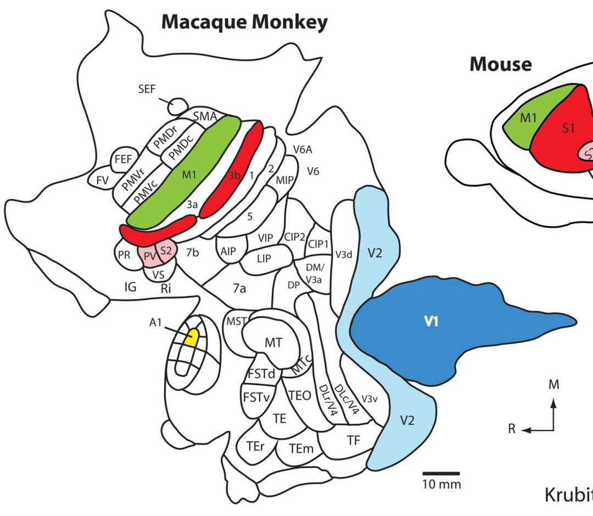

ImageJ ROIs · Calibrated TIFF
| Field | mm² | % neocortex | Status |
|---|
| M1 | 288.713 | NA | provisional; anatomical review required |
| 3b | 169.531 | NA | provisional; anatomical review required |
| V1 | 1036.679 | NA | provisional; anatomical review required |
| V2 | 658.511 | NA | provisional; anatomical review required |
| A1 | 9.137 | NA | provisional; anatomical review required |
| PV | 21.307 | NA | provisional; anatomical review required |
| S2 | 23.250 | NA | provisional; anatomical review required |
| FEF | 36.617 | NA | provisional; anatomical review required |
| FV | 36.823 | NA | provisional; anatomical review required |
| PMDr | 55.540 | NA | provisional; anatomical review required |
| PMDc | 59.721 | NA | provisional; anatomical review required |
| PMVr | 78.468 | NA | provisional; anatomical review required |
| PMVc | 53.194 | NA | provisional; anatomical review required |
| SMA | 31.219 | NA | provisional; anatomical review required |
| 3a | 118.797 | NA | provisional; anatomical review required |
| 1 | 122.095 | NA | provisional; anatomical review required |
| 2 | 78.038 | NA | provisional; anatomical review required |
| 5 | 89.079 | NA | provisional; anatomical review required |
| VIP | 74.960 | NA | provisional; anatomical review required |
| AIP | 48.114 | NA | provisional; anatomical review required |
| 7b | 119.521 | NA | provisional; anatomical review required |
| 7a | 168.425 | NA | provisional; anatomical review required |
| LIP | 81.911 | NA | provisional; anatomical review required |
| CIP2 | 91.504 | NA | provisional; anatomical review required |
| CIP1 | 44.020 | NA | provisional; anatomical review required |
| DP | 82.156 | NA | provisional; anatomical review required |
| DM/V3a | 77.438 | NA | provisional; anatomical review required |
| PR | 40.730 | NA | provisional; anatomical review required |
| VS | 29.295 | NA | provisional; anatomical review required |
| MT | 151.790 | NA | provisional; anatomical review required |
| MST | 64.818 | NA | provisional; anatomical review required |
| MTc | 69.801 | NA | provisional; anatomical review required |
| FSTd | 53.334 | NA | provisional; anatomical review required |
| FSTv | 64.764 | NA | provisional; anatomical review required |
| TEO | 111.520 | NA | provisional; anatomical review required |
| TE | 105.298 | NA | provisional; anatomical review required |
| TEr | 75.319 | NA | provisional; anatomical review required |
| TEm | 86.325 | NA | provisional; anatomical review required |
| TF | 124.976 | NA | provisional; anatomical review required |
| V3d | 177.344 | NA | provisional; anatomical review required |
| V3v | 118.730 | NA | provisional; anatomical review required |
| DL/V4_dorsal | 133.934 | NA | provisional; anatomical review required |
| DL/V4_ventral | 166.652 | NA | provisional; anatomical review required |
| MIP | 52.434 | NA | provisional; anatomical review required |
| SEF | 14.722 | NA | provisional; anatomical review required |
| IG | NA | NA | not_measurable |
| Ri | NA | NA | not_measurable |
| V6; V6A | NA | NA | not_measurable |
fig01_mouse — illustrative summary; not an independent animal
Provisional digitization; inspect anatomical boundaries.
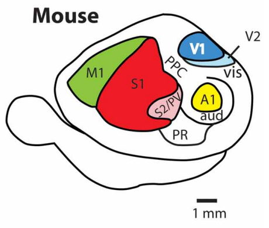

ImageJ ROIs · Calibrated TIFF
| Field | mm² | % neocortex | Status |
|---|
| M1 | 4.652 | NA | provisional; anatomical review required |
| S1 | 10.119 | NA | provisional; anatomical review required |
| S2/PV | 1.114 | NA | provisional; anatomical review required |
| V1 | 1.946 | NA | provisional; anatomical review required |
| A1 | 1.317 | NA | provisional; anatomical review required |
| V2 | 0.426 | NA | provisional; anatomical review required |
| PR | 2.250 | NA | provisional; anatomical review required |
| PPC; vis | NA | NA | not_measurable |
| aud | NA | NA | not_measurable |
fig02_capybara — illustrative summary; not an independent animal
Provisional digitization; inspect anatomical boundaries.
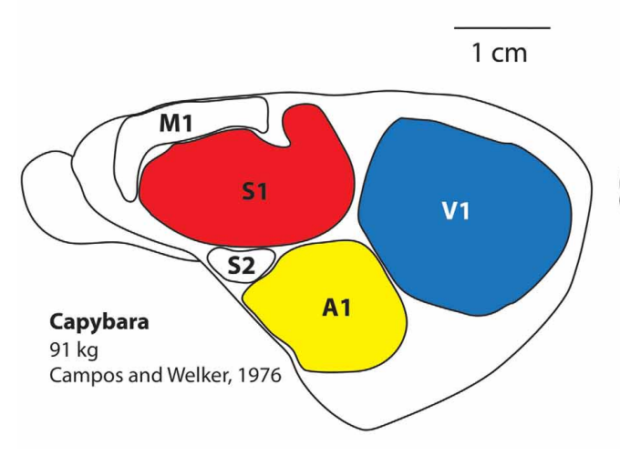

ImageJ ROIs · Calibrated TIFF
| Field | mm² | % neocortex | Status |
|---|
| S1 | 217.893 | NA | provisional; anatomical review required |
| V1 | 317.785 | NA | provisional; anatomical review required |
| A1 | 154.048 | NA | provisional; anatomical review required |
| M1 | 57.667 | NA | provisional; anatomical review required |
| S2 | 15.614 | NA | provisional; anatomical review required |
fig02_ground_squirrel — illustrative summary; not an independent animal
Provisional digitization; inspect anatomical boundaries.
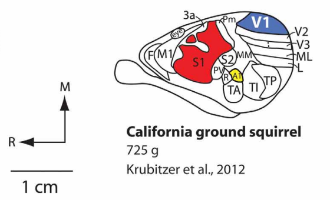

ImageJ ROIs · Calibrated TIFF
| Field | mm² | % neocortex | Status |
|---|
| S1 | 38.359 | NA | provisional; anatomical review required |
| V1 | 13.952 | NA | provisional; anatomical review required |
| A1 | 1.163 | NA | provisional; anatomical review required |
| M1 | 8.310 | NA | provisional; anatomical review required |
| 3a | 0.881 | NA | provisional; anatomical review required |
| S2 | 0.950 | NA | provisional; anatomical review required |
| PV | 1.196 | NA | provisional; anatomical review required |
| TA | 3.364 | NA | provisional; anatomical review required |
| TI | 11.893 | NA | provisional; anatomical review required |
| TP | 9.278 | NA | provisional; anatomical review required |
| MM | 7.047 | NA | provisional; anatomical review required |
| V2 | 6.918 | NA | provisional; anatomical review required |
| V3 | 1.959 | NA | provisional; anatomical review required |
| ML | 6.337 | NA | provisional; anatomical review required |
| L | 5.697 | NA | provisional; anatomical review required |
| Fm; Pm | NA | NA | not_measurable |
fig02_guinea_pig — illustrative summary; not an independent animal
Provisional digitization; inspect anatomical boundaries.
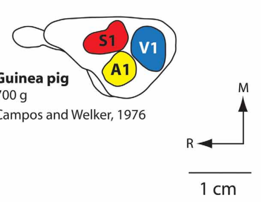

ImageJ ROIs · Calibrated TIFF
| Field | mm² | % neocortex | Status |
|---|
| S1 | 21.482 | NA | provisional; anatomical review required |
| V1 | 26.774 | NA | provisional; anatomical review required |
| A1 | 17.492 | NA | provisional; anatomical review required |
fig02_squirrel_monkey — illustrative summary; not an independent animal
Provisional digitization; inspect anatomical boundaries.
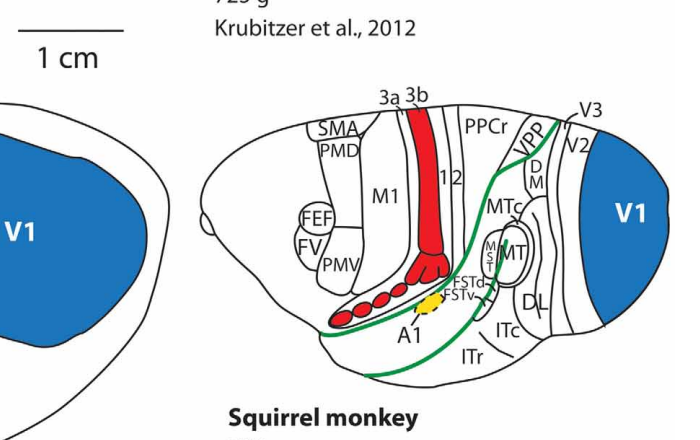

ImageJ ROIs · Calibrated TIFF
| Field | mm² | % neocortex | Status |
|---|
| 3b | 19.737 | NA | provisional; anatomical review required |
| V1 | 102.931 | NA | provisional; anatomical review required |
| A1 | 2.133 | NA | provisional; anatomical review required |
| M1 | 59.474 | NA | provisional; anatomical review required |
| PMd | 18.401 | NA | provisional; anatomical review required |
| PMv | 8.340 | NA | provisional; anatomical review required |
| SMA | 1.369 | NA | provisional; anatomical review required |
| FEF | 1.916 | NA | provisional; anatomical review required |
| FV | 2.975 | NA | provisional; anatomical review required |
| 3a | 12.658 | NA | provisional; anatomical review required |
| 1_2 | 5.619 | NA | provisional; anatomical review required |
| PPCr | 35.636 | NA | provisional; anatomical review required |
| PPC | 1.025 | NA | provisional; anatomical review required |
| DM | 2.312 | NA | provisional; anatomical review required |
| MTc | 8.540 | NA | provisional; anatomical review required |
| MT | 2.223 | NA | provisional; anatomical review required |
| MST | 4.096 | NA | provisional; anatomical review required |
| ITc | 43.296 | NA | provisional; anatomical review required |
| ITr | 49.975 | NA | provisional; anatomical review required |
| DL | 22.101 | NA | provisional; anatomical review required |
| V2 | 31.488 | NA | provisional; anatomical review required |
| V3 | 13.405 | NA | provisional; anatomical review required |
| FSTd | NA | NA | not_measurable |
| FSTv | NA | NA | not_measurable |
fig06C_bat — illustrative summary; not an independent animal
Provisional digitization; inspect anatomical boundaries.
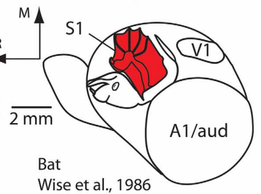

ImageJ ROIs · Calibrated TIFF
| Field | mm² | % neocortex | Status |
|---|
| S1_forelimb | 4.135 | NA | provisional; anatomical review required |
| V1 | 1.391 | NA | provisional; anatomical review required |
| A1/aud | 22.914 | NA | provisional; anatomical review required |
| S1 | NA | NA | not_measurable |
fig06C_mouse — illustrative summary; not an independent animal
Provisional digitization; inspect anatomical boundaries.
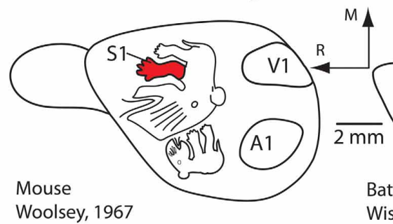

ImageJ ROIs · Calibrated TIFF
| Field | mm² | % neocortex | Status |
|---|
| S1_forelimb | 0.818 | NA | provisional; anatomical review required |
| V1 | 3.864 | NA | provisional; anatomical review required |
| A1 | 4.160 | NA | provisional; anatomical review required |
| S1 | NA | NA | not_measurable |
fig07A_platypus — illustrative summary; not an independent animal
Provisional digitization; inspect anatomical boundaries.
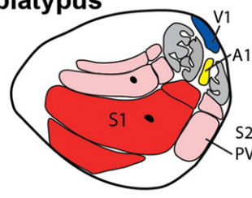

ImageJ ROIs · Calibrated TIFF
| Field | mm² | % neocortex | Status |
|---|
| S1_bill | NA | NA | provisional; anatomical review required |
| S1_other_body | NA | NA | provisional; anatomical review required |
| S2 | NA | NA | provisional; anatomical review required |
| PV | NA | NA | provisional; anatomical review required |
| V1 | NA | NA | provisional; anatomical review required |
| A1 | NA | NA | provisional; anatomical review required |
| whole_S2; whole_PV | NA | NA | not_measurable |
fig07B_star_nosed_mole — illustrative summary; not an independent animal
Provisional digitization; inspect anatomical boundaries.
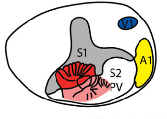

ImageJ ROIs · Calibrated TIFF
| Field | mm² | % neocortex | Status |
|---|
| S1_star | NA | NA | provisional; anatomical review required |
| S1_other_body | NA | NA | provisional; anatomical review required |
| S2_PV_star | NA | NA | provisional; anatomical review required |
| V1 | NA | NA | provisional; anatomical review required |
| A1 | NA | NA | provisional; anatomical review required |
| whole_S2; whole_PV | NA | NA | not_measurable |
fig07C_raccoon — illustrative summary; not an independent animal
Provisional digitization; inspect anatomical boundaries.
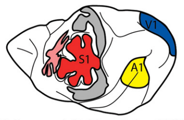

ImageJ ROIs · Calibrated TIFF
| Field | mm² | % neocortex | Status |
|---|
| S1_forepaw | NA | NA | provisional; anatomical review required |
| S1_other_body | NA | NA | provisional; anatomical review required |
| V1 | NA | NA | provisional; anatomical review required |
| A1 | NA | NA | provisional; anatomical review required |
| whole_S2; whole_PV | NA | NA | not_measurable |
fig07D_naked_mole_rat — illustrative summary; not an independent animal
Provisional digitization; inspect anatomical boundaries.
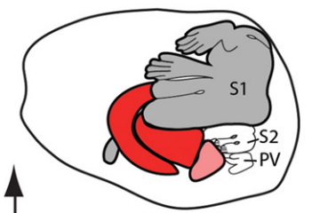

ImageJ ROIs · Calibrated TIFF
| Field | mm² | % neocortex | Status |
|---|
| S1_teeth | NA | NA | provisional; anatomical review required |
| S1_other_body | NA | NA | provisional; anatomical review required |
| S2_PV_teeth | NA | NA | provisional; anatomical review required |
| whole_S2; whole_PV | NA | NA | not_measurable |
fig08A_enucleated_opossum — illustrative summary; not an independent animal
Provisional digitization; inspect anatomical boundaries.
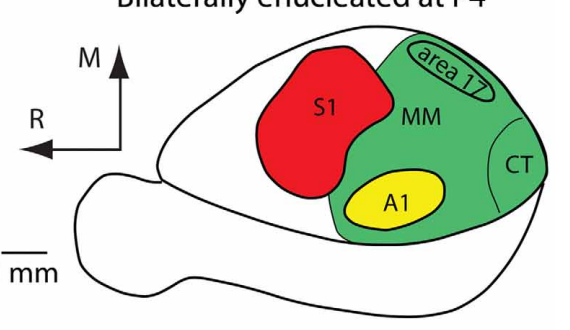

ImageJ ROIs · Calibrated TIFF
| Field | mm² | % neocortex | Status |
|---|
| S1 | 5.703 | NA | provisional; anatomical review required |
| A1 | 1.793 | NA | provisional; anatomical review required |
| area17 | 0.627 | NA | provisional; anatomical review required |
| multimodal_envelope_including_A1_area17_CT | 13.746 | NA | provisional; anatomical review required |
| CT | 1.631 | NA | provisional; anatomical review required |
fig08A_normal_opossum — illustrative summary; not an independent animal
Provisional digitization; inspect anatomical boundaries.
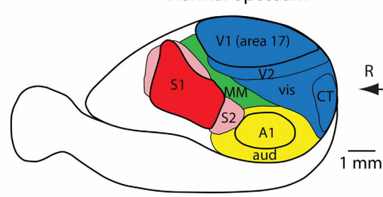

ImageJ ROIs · Calibrated TIFF
| Field | mm² | % neocortex | Status |
|---|
| S1 | 4.518 | NA | provisional; anatomical review required |
| S2 | 0.814 | NA | provisional; anatomical review required |
| MM | 1.330 | NA | provisional; anatomical review required |
| V1 | 5.364 | NA | provisional; anatomical review required |
| V2 | 1.503 | NA | provisional; anatomical review required |
| vis | 2.942 | NA | provisional; anatomical review required |
| CT | 1.081 | NA | provisional; anatomical review required |
| A1 | 1.992 | NA | provisional; anatomical review required |
| aud | 2.604 | NA | provisional; anatomical review required |
All-figure source assessment
Fourteen illustrative views cover figures 1, 2, 6C, 7 and 8A. Figure 7 somatotopic drawings are pixel-only. Other views use the applicable printed bars. The ghost bat is Macroderma gigas; developmental fruit-bat panels do not change that identification. FST subdivisions without separate closed borders remain NA. Enucleated-opossum domains explicitly include the named child fields; these are not additive observations or independent specimens.
Source-toggle precision review · Field inventory
Figure 1 — digitized_provisional
2 measured view(s), 52 field/component observations; 0 boundaries remain NA for anatomical review. Illustrative, partial, repeated and unscaled restrictions apply.
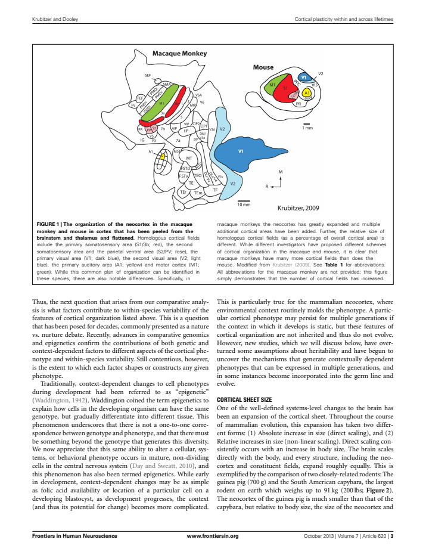
Figure 2 — digitized_provisional
4 measured view(s), 45 field/component observations; 0 boundaries remain NA for anatomical review. Illustrative, partial, repeated and unscaled restrictions apply.
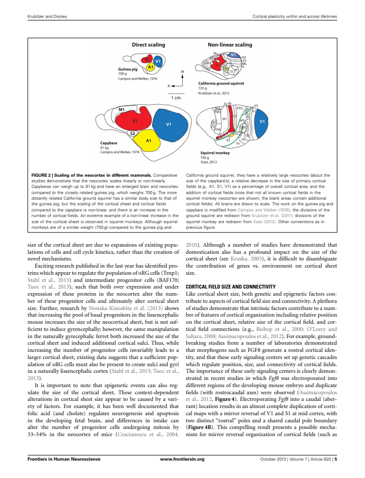
Figure 3 — assessed_excluded
Developmental laminar/precursor architecture, not a tangential cortical field map.
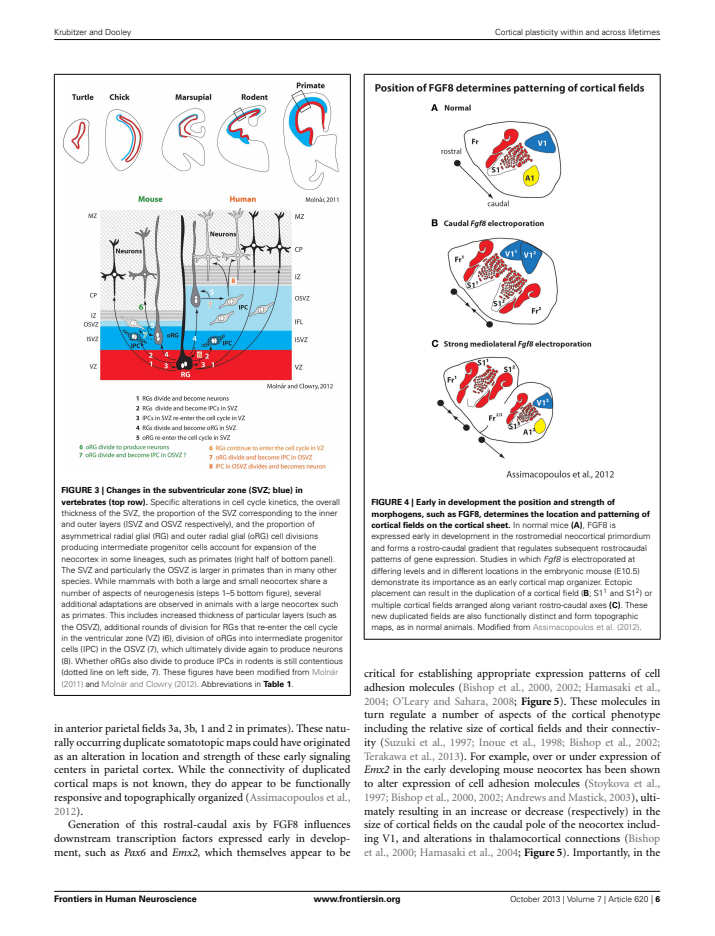
Figure 4 — assessed_excluded
Conceptual FGF8-expression and arealization cartoons; no specimen-specific planar reconstruction or defensible anatomical boundary scale.
Figure 5 — assessed_excluded
Gene-expression, arealization and connection cartoons; illustrative ellipses are not specimen field reconstructions.
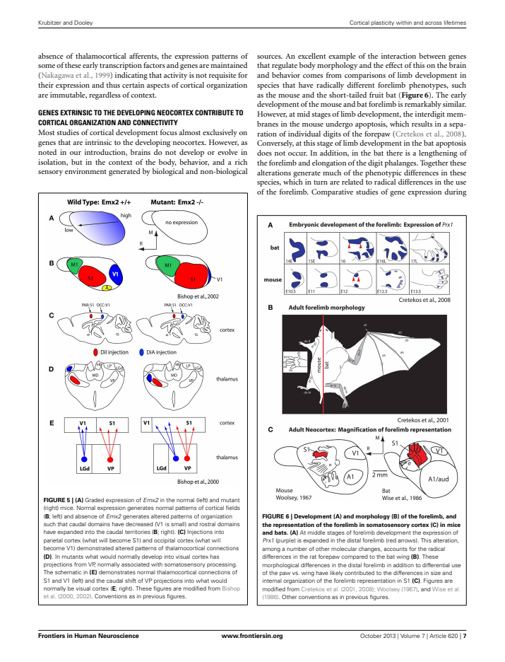
Figure 6 — digitized_provisional
2 measured view(s), 6 field/component observations; 0 boundaries remain NA for anatomical review. Illustrative, partial, repeated and unscaled restrictions apply. Panel C mouse/bat cortical maps are measured; A/B show development and forelimb morphology, not cortical field surfaces.
Figure 7 — digitized_provisional
4 measured view(s), 18 field/component observations; 0 boundaries remain NA for anatomical review. Illustrative, partial, repeated and unscaled restrictions apply.
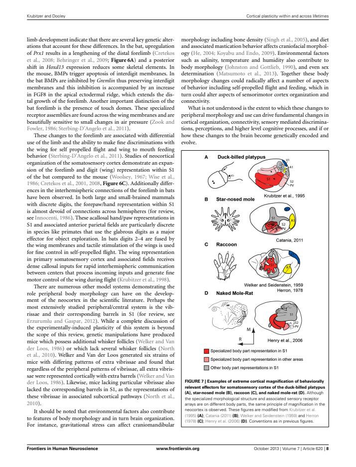
Figure 8 — digitized_provisional
2 measured view(s), 14 field/component observations; 0 boundaries remain NA for anatomical review. Illustrative, partial, repeated and unscaled restrictions apply. Panel A cortical maps are measured; B is a connectivity illustration, not another independent areal reconstruction.
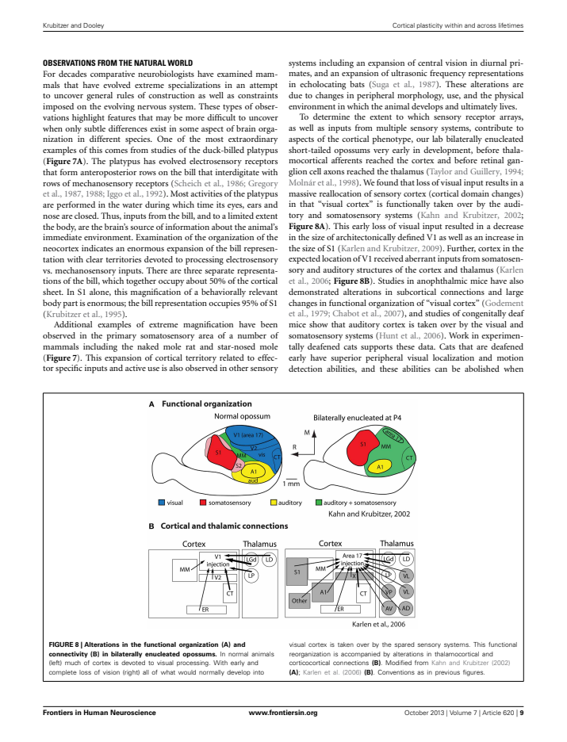
Figure 9 — assessed_excluded
Bar charts of reported proportions; no field outlines.
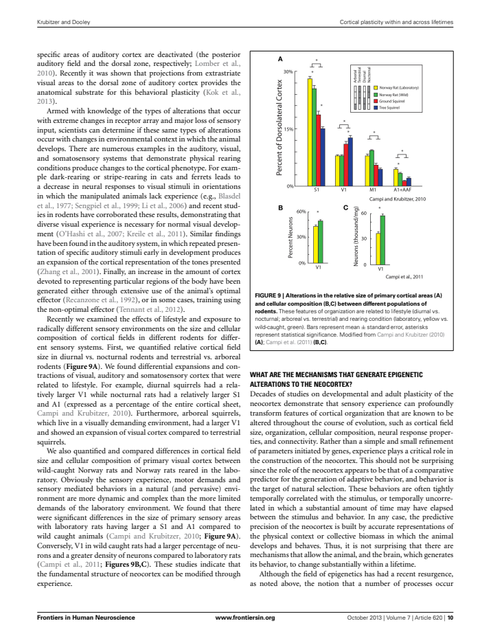